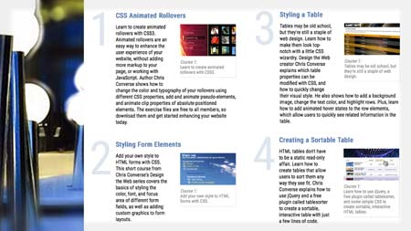

Course Samples Use the buttons below to filter the list of courses. Show All Design CSS JavaScript Sketch Essential Training: The Basics Creating a Calculation Tool with AngularJS 1 CSS Shorts Weekly Creating a Responsive Web Design Creating an HTML5 Banner Ad with GreenSock (GSAP) Design the Web: Creating an Event Countdown Design the Web: CSS Animated Rollovers Design the Web: Control Colors in Photoshop with SmartObjects Design the Web: Creating a Repeating Background in Photoshop  Design the Web: Using Counters and Resets in CSS Creating Expandable Panels with jQuery